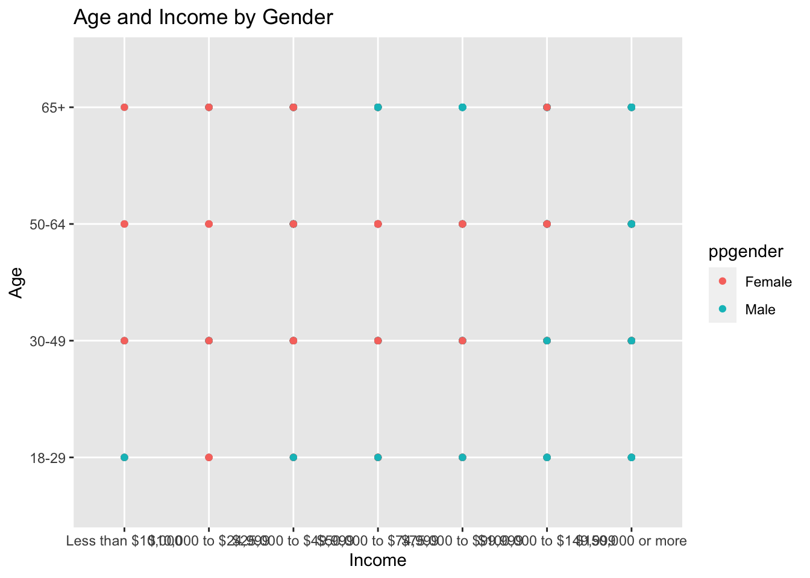
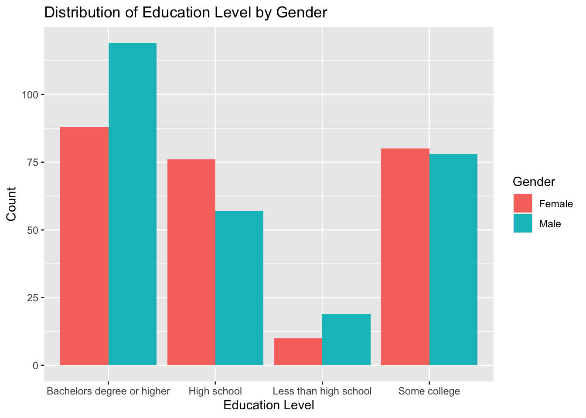

library(tidyverse)
library(ggplot2)
knitr::opts_chunk$set(echo = TRUE, warning=FALSE, message=FALSE)Challenge 7
challenge_7
Matthew_Weiner
abc_poll
Visualizing Multiple Dimensions
Challenge Overview
Today’s challenge is to:
- read in a data set, and describe the data set using both words and any supporting information (e.g., tables, etc)
- tidy data (as needed, including sanity checks)
- mutate variables as needed (including sanity checks)
- Recreate at least two graphs from previous exercises, but introduce at least one additional dimension that you omitted before using ggplot functionality (color, shape, line, facet, etc) The goal is not to create unneeded chart ink (Tufte), but to concisely capture variation in additional dimensions that were collapsed in your earlier 2 or 3 dimensional graphs.
- Explain why you choose the specific graph type
- If you haven’t tried in previous weeks, work this week to make your graphs “publication” ready with titles, captions, and pretty axis labels and other viewer-friendly features
R Graph Gallery is a good starting point for thinking about what information is conveyed in standard graph types, and includes example R code. And anyone not familiar with Edward Tufte should check out his fantastic books and courses on data visualizaton.
(be sure to only include the category tags for the data you use!)
Read in data
Read in one (or more) of the following datasets, using the correct R package and command.
- eggs ⭐
- abc_poll ⭐⭐
- australian_marriage ⭐⭐
- hotel_bookings ⭐⭐⭐
- air_bnb ⭐⭐⭐
- us_hh ⭐⭐⭐⭐
- faostat ⭐⭐⭐⭐⭐
Introduction
For this challenge I chose to use the abc_poll dataset.
library(readr)
abc <- read_csv("_data/abc_poll_2021.csv")Briefly describe the data
# num of rows of dataset
nrow(abc)[1] 527#num of cols of dataset
ncol(abc)[1] 31#name of all the columns
colnames(abc) [1] "id" "xspanish" "complete_status" "ppage"
[5] "ppeduc5" "ppeducat" "ppgender" "ppethm"
[9] "pphhsize" "ppinc7" "ppmarit5" "ppmsacat"
[13] "ppreg4" "pprent" "ppstaten" "PPWORKA"
[17] "ppemploy" "Q1_a" "Q1_b" "Q1_c"
[21] "Q1_d" "Q1_e" "Q1_f" "Q2"
[25] "Q3" "Q4" "Q5" "QPID"
[29] "ABCAGE" "Contact" "weights_pid" num_states <- n_distinct(abc$ppstaten)
print(num_states)[1] 49These initial investigations have led me to believe that this dataset represents the data collected about participants in some poll, likely political, as part of the news network ABC. Additionally, we can see that this is a nation-wide poll as almost every state is included in the dataset
The variables include personal information about the participants such as their education, their household size, their age, etc. There are also variables related to the questions asked to the partipants.
Tidy Data (as needed)
When tidying up this data, we first want to check if there are any missing entries in the dataset.
#count number of missing entries
sum(is.na(abc))[1] 0The above codeblock shows us that there is no missing data in the typical form.
However if we look at the results of the different questions asked to the participants we can see that there is a value called Skipped:
table(abc$Q1_a)
Approve Disapprove Skipped
329 193 5 In order to clean this data up, we want to instead replace all Skipped questions with NA instead as this will make any future actions on this dataset easier.
abc <- abc %>% mutate(across(starts_with("Q"), ~ifelse(.=="Skipped", NA, .)))
#sanity check
table(abc$Q1_a)
Approve Disapprove
329 193 sum(is.na(abc))[1] 86Another thing we could fix with this dataset is the format for some of the variables. For instance, the values of the variable QPID are:
unique(abc$QPID)[1] "A Democrat" "An Independent" "Something else" "A Republican"
[5] NA The articles at the start of each variable name are unnecessary and so we can mutate the dataset in order to remove those:
abc <- abc %>%
mutate(QPID = gsub("^A\\s|^An\\s", "", QPID))
#sanity check
table(abc$QPID)
Democrat Independent Republican Something else
176 168 152 28 I am also interested in viewing visualizations about levels of income. However, currently the table of the income is ordered alphabetically instead of by the value of the variable. We want to instead re order this so that the graphs are more meaningful.
new_levels <- c("Less than $10,000", "$10,000 to $24,999", "$25,000 to $49,999",
"$50,000 to $74,999", "$75,000 to $99,999", "$100,000 to $149,999",
"$150,000 or more")
abc$ppinc7 <- factor(abc$ppinc7, levels = new_levels)
table(abc$ppinc7)
Less than $10,000 $10,000 to $24,999 $25,000 to $49,999
17 32 82
$50,000 to $74,999 $75,000 to $99,999 $100,000 to $149,999
85 69 105
$150,000 or more
137 Visualization with Multiple Dimensions
The first visualization I chose to create is a scatterplot of the income of the responndent and their age, with their gender color coded.
ggplot(data = abc, aes(x = ppinc7, y = ABCAGE, color = ppgender)) +
geom_point() +
labs(title = "Age and Income by Gender",
x = "Income",
y = "Age")
This graph shows us that females typically will be making less moey regardless of age, while males often do not make a lot of money while young, but as they age they make significantly more.
The second visualization I chose to create is a bar graph which displays the education level for each gender.
ggplot(data = abc, aes(x = ppeducat, fill = ppgender)) +
geom_bar(position = "dodge") +
labs(title = "Distribution of Education Level by Gender",
x = "Education Level",
y = "Count",
fill = "Gender")
As we can see, males are more likely to have a college level degree, while women are more likely to graduate hiigh school and less likely to stop before high school.